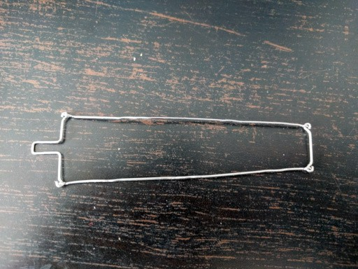
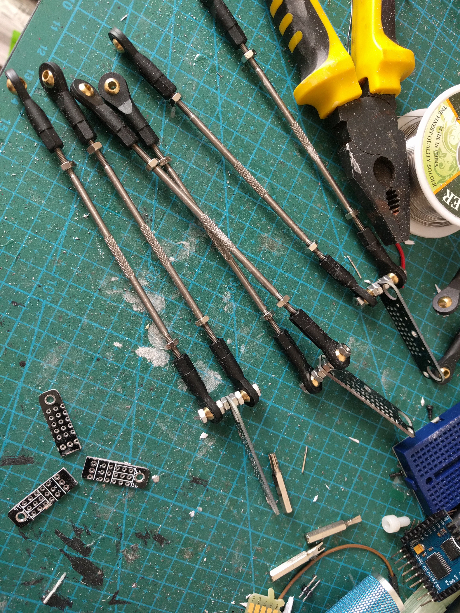
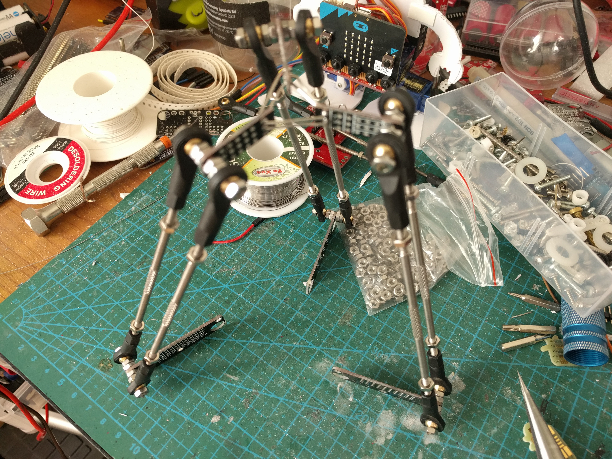

Paperclips¶
Published on 2017-03-17 in Deltabot.
The first approach wasn’t very successful:
The joints would lock up and get into exactly the wrong positions. So I decide to try a little less gangsta approach and actually order some of those push rods for RC models – ones that already have ball joint “snaps” on them. I made the order and forgot about the whole thing.
Today, they arrived, and I decided to continue the project. Initially I planned to make all the remaining levers out of paper clips, or to go posh and go to the nearby fablab and lasercut the parts. Then I looked at a stack of prototype PCBs for Tote that I will never use (it’s an older prototype) and noticed that they already have the holes for mounting the servo horns, so if I only cut them up a little…
This appears to be working quite well. I had to enlarge the screw holes a little, but otherwise they seem just perfect. Next, I had to make the center hub somehow. I decided to use the leftover pieces of the PCBs I have just cut up, and simply solder them together. Then, I realized I will probably want to have a hole in the middle, to install a pen or something, so instead of soldering them together directly I used some paperclips.
Then I just bolted the remaining PCBs together to create the base, and used two-sided tape to attach the servos to that. The resulting construction looks quite pleasing to the eye, in my opinion, and is reasonably rigid. Of course it’s not perfect: both the ball joints and the servos have some play in them, which translates to the center hub being a bit wobbly – so I probably won’t have millimeter precision on this. But my main interest is in working out the inverse kinematics of this thing, so this is good enough.